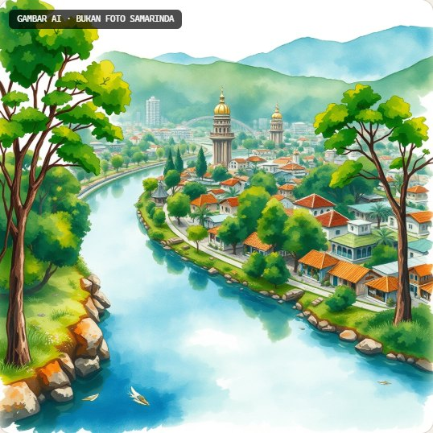

Hari ini kita memutuskan. Pada 2045, kita melihat akibatnya.
Situs pendamping dan Shelbot, GenAI di meja permainan, untuk sebuah board game keberlanjutan tentang Samarinda.
shellyefwinda.github.io/shelbot · Oktober 2026
→ lanjut O ikhtisar P presenter F layar penuh
Buka dengan kalimat di layar. Ini permainan papan tentang Samarinda 2045, dimainkan lima siswa dengan peran berbeda. Yang akan saya tunjukkan: permainannya sebentar, lalu situs dan Shelbot yang kami bangun untuk mendampinginya, lalu apa yang ada di balik layar.
Latar permainan
Empat masalah kota yang saling memberi makan
Ruang hijau menyusut
Daerah resapan berkurang, suhu kota naik.
Banjir
Limpasan bertemu drainase yang tersumbat sampah.
Sampah dan pencemaran sungai
Banjir menyebarkan sampah lebih jauh ke kampung.
Tambang dan lubang bekas tambang
Menopang ekonomi, sekaligus mengubah bentang alam.
Isu dan kaitannya dari panduan resmi permainan dan halaman Samarinda di situs.
Permainan ini berangkat dari isu nyata. Panahnya menunjukkan kenapa sulit: ruang hijau yang menyusut menambah limpasan, limpasan bertemu drainase yang tersumbat sampah, banjir menyebarkan sampah, dan kegiatan yang menopang ekonomi kota adalah juga yang mengubah bentang alamnya. Tidak ada satu pihak yang bisa menyelesaikannya sendirian. Itu sebabnya permainannya kooperatif.
BAB 01
Permainannya
Lima peran, enam fase, satu kota yang harus tetap seimbang.
Bagian pertama: permainannya sendiri, supaya semua orang tahu apa yang didampingi situs ini.
Satu sesi di kelas
Board game fisik, dimainkan di atas meja
5peran pemangku kepentingan
6fase permainan
184kartu dalam dua belas jenis
8zona tematik di papan
100–120menit satu sesi
Pemerintah, pelaku usaha, masyarakat sungai, warga dan pemuda, serta ilmuwan dan pendidik. Menang atau kalah bersama. Satu proyek prioritas berlanjut menjadi aksi nyata siswa selama 7 sampai 30 hari.
Sumber: Futures in Action, Complete Game Guide, Samarinda 2045 Edition. Status: prototipe playtesting.
Angka-angka ini semuanya dari panduan resmi. Yang penting ditekankan: permainannya kooperatif, dan berakhir dengan aksi nyata 7 sampai 30 hari, bukan cuma skor.
Waktu tiap fase
Enam fase, dan lamanya tidak sama
Rentang menit per fase dari panduan resmi. Bagian padat = batas bawah, bagian pudar = sampai batas atas. Fase 4 paling panjang karena proyek dibayar lewat Project Market dalam tiga ronde.
Grafik ini memakai skala yang sama untuk semua fase. Fase 3 paling singkat, 10 sampai 12 menit. Fase 4 paling panjang, 22 sampai 28 menit. Dulu situs sempat menulis "15 sampai 18 menit per fase"; itu sudah kami koreksi supaya sesuai panduan.
Fase 2 · Bayangkan masa depan
Setiap meja menyusun empat Samarinda, lalu memilih satu
Klik tiap masa depan. Expected adalah garis dasar: kebiasaan hari ini diteruskan. Alternative mengubah sebagian keputusan. Preferred adalah kota yang paling diinginkan bersama. Transformative mengubah susunan yang selama ini dianggap tetap. Di Fase 3 satu dipilih, dan pilihan itu hanya sah bila didukung minimal empat dari lima peran.
Empat City Indicator · skala 0–10, mulai di 5
Satu keputusan menaikkan yang satu, menekan yang lain
Pilih dua Mini-Project. Angkanya dibaca dari baris dampak kartu aslinya.
Dampak E/S/Ec/FR dari kartu P02, P05, P09, P31 di dek resmi. Syarat menang: tidak ada indikator yang berakhir di rentang kritis 0–2.
Coba pilih Community Rain Garden dan Mahakam Microgrid. Lingkungan naik, tapi Ekonomi bisa turun. Itu inti permainannya: setiap pilihan ada harganya. Dasbor di situs bekerja dengan cara yang sama.
BAB 02
Situsnya
Untuk belajar sebelum bermain, dan menengok kembali sesudahnya. Dalam dua bahasa.
Bagian kedua: situsnya.
Peta situs · Bahasa Indonesia dan Inggris
Dua belas halaman, masing-masing satu tugas
Setiap halaman punya alamat /id/ dan /en/. Klik untuk membuka di tab baru.
Setiap halaman punya satu tugas. Aturan bisa dicetak empat halaman A4. Dasbor menghitung dampak dari kartu asli. Katalog membuka seluruh 184 kartu. Fasilitator untuk guru yang memandu sesi.
Demo langsung
shellyefwinda.github.io/shelbot/id/
Ini situs yang sedang tayang, bukan gambar. Pindah halaman lewat tombol di kanan. Di dalam bingkai bisa digulir dan diklik seperti biasa.
Mini game · Jaga Samarinda!
Pemanasan tiga menit sebelum bermain
Tiga level berwaktu, 22 kartu bergambar, dua tantangan Samarinda, dan satu tantangan akhir. Benar +100, salah −25, bonus untuk jawaban beruntun.
Coba di sini. Isi kartu dari dokumen klien "Mini Game Interaktif".
Skor 01 / 4
Mini game ini bukan permainannya, hanya pemanasan. Gunanya membuat siswa mulai menimbang dampak pilihan sehari-hari. Ilustrasi tiap kartu digambar sendiri sebagai SVG, bukan gambar AI.
BAB 03
Shelbot
GenAI yang dipakai di meja permainan. Ia membantu berpikir, dan tidak pernah ikut memilih.
Bagian ketiga: Shelbot.
Tiga otak, satu pijakan
Naskah lebih dulu, model bahasa di atasnya
Lapis nol
Naskah
Jawaban dari panduan resmi dan 184 kartu. Berjalan di peramban, tanpa server.
Gratis · offline
Lapis satu
Llama 3.3 70B · 3.1 8B
Lebih luwes, berpijak pada jawaban naskah. Lewat Cloudflare Workers AI.
Aktif · jatah gratis harian
Lapis dua
Claude
Sudah terpasang di kode, menyala bila kunci API dipasang.
Opsional · belum aktif
Pengunjung bisa memilih otaknya, atau membandingkan semuanya sekaligus. Jawaban naskah selalu ikut dikirim sebagai pijakan.
Kuncinya: model tidak menjawab dari nol. Setiap pertanyaan dikirim bersama jawaban naskah dari panduan resmi, jadi model menjelaskan ulang, bukan mengarang aturan. Kalau model gagal, yang tampil jawaban naskah.
Diwarisi dari aturan GenAI di panduan
Batas yang dipegang Shelbot
1
Tidak punya suara
Tidak memilih proyek prioritas dan tidak menetapkan biaya. Keputusan dikembalikan ke kelima peran.
2
Dijatah
Dua pemakaian inti gratis (Fase 1 dan Fase 4). Selebihnya membayar GenAI Access Token.
3
Terbuka
Prompt dan keluaran ditampilkan terbuka, termasuk prompt di balik setiap gambar.
4
Tetap di dunia permainan
Isu Samarinda boleh. Pertanyaan di luar itu ditolak, tanpa diam-diam tetap dijawab.
Batas ini bukan buatan kami; ini aturan GenAI dari panduan permainan, kami terapkan juga di situs. Nomor empat penting: saat uji, model sempat menolak pertanyaan Piala Dunia tapi tetap menyebut juaranya. Itu sudah dilarang di instruksinya.
Coba langsung
Tanya Shelbot di sini
Shelbot yang sama dengan di situs: Llama 3.3 70B lewat Cloudflare, berpijak pada naskah panduan.
Memuat Shelbot…
Klik di luar bingkai untuk kembali memakai tombol panah. Batas 8 pertanyaan per menit untuk satu jaringan, jadi satu ruangan berbagi jatah yang sama.
Klik salah satu contoh di kiri, atau ketik sendiri di dalam bingkai. Perhatikan pertanyaan ketiga: Shelbot tidak memilihkan proyek, ia mengembalikan keputusan ke kelompok. Pertanyaan keempat ditolak karena di luar dunia permainan. Setelah mengetik di dalam bingkai, klik di luar bingkai dulu supaya panah kembali menggerakkan slide.
Uji akurasi · 28 soal dari panduan resmi
Diukur dulu, baru dipercaya
Uji 28 September 2026: 23 soal fakta, 2 soal isu Samarinda, 3 soal di luar lingkup. Llama 3.3 70B sesudah perbaikan: 10 dari 10 soal yang sebelumnya gagal kini lulus.
Sebelum perbaikan, mesin naskah hanya lulus 14 dari 23 soal fakta. Kesalahannya kebanyakan soal durasi dan kata kunci yang salah sasaran. Sesudah perbaikan 23 dari 23, dan semua soal di luar lingkup ditolak. Ini dijalankan ulang dengan skrip, jadi bisa diulang setiap kali naskah berubah.
Studio Fase 2 · gambar dan prediksi
Dari cerita siswa ke Samarinda 2045
Masa laluBanjir sering terjadi dan banyak lubang bekas tambang.
Tren sekarangPonton batu bara makin ramai, dan pelajar mulai peduli sampah.
TindakanMembuat bank sampah sekolah dan kampanye sungai bersih.
2030
Bank sampah sekolah berhasil mengurangi sampah yang dibuang ke sungai.
2040
Tambang di sekitar Mahakam mulai berkurang, dan reklamasi lahan bekas tambang dikembangkan.
2045
Samarinda lebih hijau dan bersih, dengan Sungai Mahakam yang jernih.

Contoh keluaran nyata, uji tayang 1 Okt 2026, skenario Transformative. Teks diringkas dari jawaban Llama 3.3 70B; gambar oleh Flux, bertanda AI.
Fitur ini permintaan klien. Siswa menulis apa yang terjadi di masa lalu, tren yang mereka lihat, dan tindakan yang ingin mereka lakukan. Shelbot menyusun linimasa 2030, 2040, 2045 plus satu peluang, satu risiko, dan satu asumsi, persis keluaran wajib Fase 2. Lalu adegan 2045-nya bisa langsung digambar. Selalu bertanda: satu kemungkinan, bukan ramalan.
Coba langsung
Prediksi Samarinda 2045 bersama Shelbot
Isi tiga kolom di dalam bingkai, pilih skenario, lalu kirim. Adegan 2045-nya bisa langsung digambar.
Memuat Studio…
Satu kemungkinan untuk dibahas, bukan ramalan. Tulisan tidak disimpan. Batas tiga gambar per menit.
Mulai dengan Isi contoh, atau minta peserta mendiktekan apa yang mereka lihat di Samarinda. Setelah linimasa muncul, tekan Gambarkan Samarinda 2045 ini di dalam bingkai. Gambarnya butuh sekitar sepuluh detik.
BAB 04
Di balik layar
Bagaimana situs ini berjalan, menjaga data siswa, dan diuji.
Bagian terakhir: teknis, privasi, dan kualitas.
Arsitektur
Situs statis, satu layanan kecil untuk AI
Peramban
Siswa dan guru
Desktop atau ponsel. Mode Naskah berjalan di sini tanpa server.
GitHub Pages
Situs
Next.js 16, keluaran statis. 12 halaman, dua bahasa.
Cloudflare Worker
Shelbot+
Batas per alamat IP: 8 pertanyaan dan 3 gambar per menit.
Jatah gratis Workers AI 10.000 Neuron per hari. Bila habis di paket gratis, permintaan berhenti dan tidak menagih.
Situsnya sendiri hanya berkas statis, jadi murah dan cepat. Satu-satunya bagian yang berjalan di server adalah Worker kecil di Cloudflare untuk AI. Semuanya di akun klien sendiri.
Privasi dan keamanan
Pengguna utamanya pelajar. Jadi datanya tidak disimpan.
Pertanyaan, isian prediksi, dan gambar tidak disimpan.
Setiap teks diperiksa Llama Guard sebelum dijawab atau digambar.
Gambar selalu bertanda GAMBAR AI · BUKAN FOTO SAMARINDA, juga di berkas unduhannya.
Mode Naskah tidak mengirim apa pun ke server.
Huruf disajikan dari situs sendiri, bukan dari Google.
Halaman privasi menjelaskan semua ini dalam bahasa sehari-hari.
Pengguna utamanya anak sekolah, jadi kami memilih tidak menyimpan apa pun. Setiap fitur yang mengirim data ke server dijelaskan di halaman privasi, termasuk fitur prediksi yang baru.
Uji otomatis di peramban
Diuji di layar yang dipakai siswa
48tampilan diperiksa: 12 halaman × 2 bahasa × desktop dan ponsel, 0 temuan
32/32uji revisi klien 1 Oktober lulus
23/23soal fakta dijawab benar oleh mesin naskah
0galat JavaScript di seluruh uji
Yang diperiksa: tautan rusak, halaman yang bergeser ke samping di ponsel, gambar yang gagal dimuat, dan galat skrip.
Playwright dengan Microsoft Edge. Uji Langkah 06 (28 Sep 2026) dan uji revisi (1 Okt 2026).
Uji ini dijalankan otomatis setiap kali ada perubahan besar, sebelum terbit. Itu yang membuat kami menemukan, misalnya, panel dasbor yang menimpa teks dan tangan maskot yang terpotong.
Langkah berikutnya
Yang masih terbuka
Selaraskan panduan dengan empat skenario
Situs kini memakai Preferred Future di Fase 2; panduan resmi masih menyebut tiga.
Data dari playtesting kelas
Pertanyaan siswa yang nyata menjadi bahan naskah dan uji akurasi berikutnya.
Uji ulang penuh Llama
Seluruh 28 soal untuk kedua model, sesudah perbaikan naskah.
Claude, bila dibutuhkan
Diaktifkan dengan kuota harian, hanya kalau mutu Llama dirasa kurang.
Yang paling mendesak nomor satu: panduan dan situs harus bicara hal yang sama soal jumlah skenario. Sisanya bergantung pada playtesting.